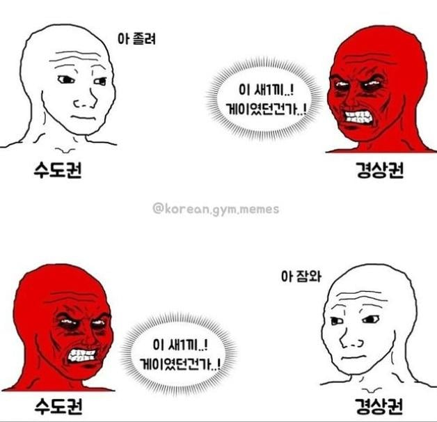

ㅋㅋㅋ

ㅋㅋㅋ
잠와는 안씀. 잠온다라고 씀
잠와보다 잠온다가 더 게이 같아
아 피곤해 디지것다
잠와까지하면 게이 ㅇㅇ 보통 잠와 디지겠다까지 함
서울은 걍 말투자체가 씨발게이같음 그냥
'표준어'
경상도애들은 항상 화나 있음
역 시 시 골 것 들 은
감!히!올!림!포!스!에!대!적!하!겠!다!고
천!둥!의!시!간!이!다!
기집애도 아니고 누가 잠"와"라카노
"잠와" 라는 표현은 쓴적도 들은적도 없다
잠온다 또는 자부랍다 또는 자부라 디지겠다
시골 새끼들 어휘로 공격받으니깐 '실제로는 잠'온다' 한다' 라고 어말어미 갖고 변명하는 거 전라 꼴같잖넦ㄲㄲㄲㄲㄲㄲㄲㄲㄲㄲㄲㄲㄲㄲㄲ
아 역시 시골답다 변명도 게이 같이 하는 거
얘는 어디서 긁힌거냐 ㅋㅋㅋ
아 잠온다
수도권은 아 졸려 안함.
개졸리네 ㅅㅂ 함
게이=지가 남들한테 어떻게 보이는지 신경 쓰면서 어휘고름
요즘은 잠온다는 말 잘 안하는듯
걍 아 존나 피곤하다 이러는거 같아
불꺼
심지어 잠온디~ 이러면 걍 씹게이임
아 존나 잠오네
아 존나 졸리노 시발
이거 자쥬썻음